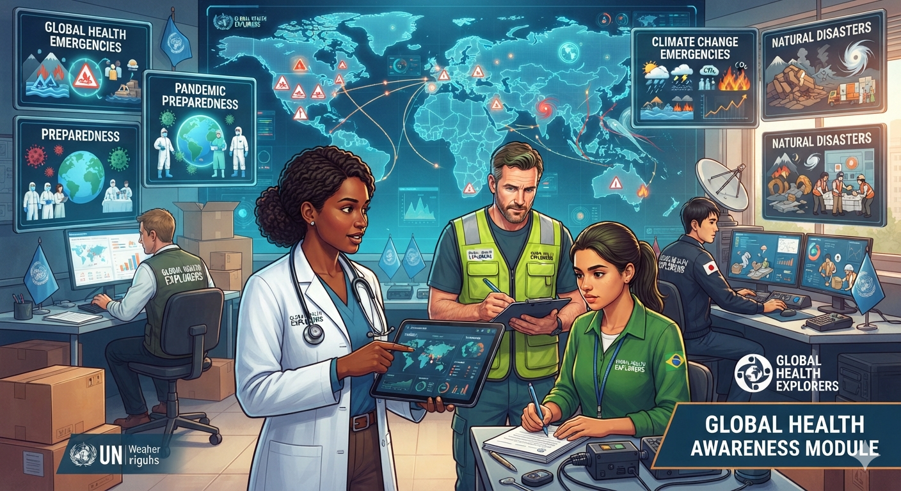

We share connected systems.
People move. Goods move. Information moves. Air and water move. Animals, ecosystems and infectious agents can move too. Our world is interconnected even when political borders are not.
Discover how people, environments, cultures, movement, technology and health are connected across our shared world.
A political border can organize countries, but many forces that influence health move through air, water, ecosystems, travel and human networks.

Global awareness begins with seeing the links among people, places, environments, economies, culture and health.
People move. Goods move. Information moves. Air and water move. Animals, ecosystems and infectious agents can move too. Our world is interconnected even when political borders are not.
A political boundary can organize governments, but it cannot stop an ocean current, wind-borne dust, wildfire smoke or every infectious disease from moving across regions.
Different hazards move through different pathways. Understanding those pathways helps us understand why cooperation matters.
Global awareness also means understanding differences in opportunity and the reasons people move.
Global citizenship means understanding connections and taking responsibility for how our choices affect others.
The Sustainable Development Goals connect health with education, equality, climate, water, cities, peace, partnerships and more.
Listen to different perspectives, respect diversity, question unfairness, use evidence and recognize that local action can contribute to global change.
Test your understanding of connection, environment, culture, inequality, borders, SDGs and global citizenship.